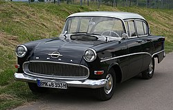
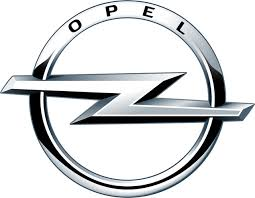

Előtörténete
Az Adam Opel által Rüsselsheimben, 1862. január 21-én alapított családi vállalkozás eleinte varrógépeket, később kerékpárokat gyártott. Autógyártással a családi cég Adam Opel 1895-ben bekövetkezett haláláig semmilyen vonatkozásban nem foglalkozott.
Története

Adam Opel halála után cégét özvegye és két fia vette át. Folytatták a kerékpárgyártást, majd 1899-ben bekapcsolódtak az autógyártásba. Az első sikeres modelljük a négy lóerős Opel Patent Motorwagen System Lutzmann volt.
Rövid időn belül az Opel az egyik legnagyobb német autógyártóvá fejlődött. Ebben szerepet játszott az is, hogy a rüsselheimi telephelyen 1924-ben bevezetett futószalagnak köszönhetően a cég olcsó modelleket állított elő, amelyek iránt a kereslet is rohamosan megnőtt. Az 1928-ban kibontakozó gazdasági válság az Opel cég életét is megváltoztatta 1929. március 17-én Wilhelm von Opel és testvére, Fritz von Opel a cég részvényeinek 80 százalékát eladta a piacvezető amerikai General Motors autókonszernnek, 140 millió birodalmi márkáért. A cég a korábbi nevét és az Opel márkanevet megtarthatta.
Amikor már igazán kezdtek fellendülni az autóeladások; kitört a második világháború, és a szövetségesek lebombázták az Opel-gyárat. A szovjet katonák elvittek rengeteg tervrajzot és gyártósort, és kifosztva hagyták ott a gyár romjait. Ezután néhány évvel Moszkvics 400/420 néven Opel Kadetteket gyártott a Szovjetunió. A háború után sírjából támadt fel az Opel, és újult erővel nőtte ki magát Európa egyik legnagyobb autógyárává.
A legfontosabb mérföldkövek az Opel logó történetében:
- Kezdetek (1862-től): Adam Opel eredetileg varrógépek, majd kerékpárok gyártásával kezdte a vállalkozást. A legelső emblémák a 19. század végén az "A" és "O" betűket (Adam Opel) tartalmazták, gyakran stilizált formában.
- A "Blitz" teherautó szerepe (1930-as évek): A ma ismert villám motívum az 1930-as években jelent meg, szorosan kötődve a népszerű Opel Blitz ("villám" németül) teherautóhoz. Ez a motívum a gyorsaságot, a megbízhatóságot és a technikai fejlődést jelképezte.
- A villám és a kör egyesítése: A villámot kezdetben egy vízszintes csík szelte át, majd ez alakult át a ma ismert, körbe foglalt villámmá, amely a márka identitásának alapeleme lett.
- Modernizáció (2017-től): Az Opel logója folyamatosan egyszerűsödött (flat design), laposabbá és letisztultabbá vált, hogy jobban megjeleníthető legyen digitális felületeken is.
- Jelenlegi logó (2023-tól): Az Opel bemutatta az új, még modernebb "villám" emblémáját, amely a márka elektromos jövőjére utal, és fokozottan figyeltek a fenntarthatóságot és a tisztaságot tükröző dizájnra.
